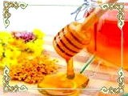
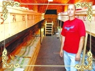
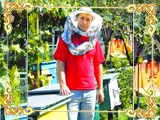

Тур «Золоті Крилечка»
 Послуги зеленого туризму - це не тільки відпочинок у сприятливих природних умовах, а ще й можливість оздоровитися.
Саме тому, ми пропонуємо Вам дивовижну подорож у світ бджілок на пасіку Віктора Кондрюка. Він розробив і запатентував унікальні методи оздоровлення бджолами. Ввесь світ знає ім'я пасічника, дізнайтесь і Ви!
Апітерапія - лікування медом та продуктами бджільництва - існує вже дуже давно. Вона здобула довіру сотень тисяч, якщо не мільйонів людей в різних країнах. Адже мед є не лише смачною їжею і джерелом вуглеводів на додаток до чаю, але і відмінним ліками і косметичним засобом.
Тобі, шановний Гостю , ми пропонуємо відвідати пасіку родини Корнюків ,у селі Перерів, Коломийського району. Разом із бджолами Віктор Корнюк допомагає людям віднайти втрачене здоров'я. Чоловік практикує апітоксинотерапію...На основі продуктів бджільництва Віктор Корнюк розробив унікальну авторську методику оздоровлення, створив лікувальні препарати.
***
На подвір'ї виразно пахне медом. Так духмяно й солодко, наче в дитинстві на дідовій пасіці. Блакитні й жовті вулики рояться в саду - перед вікнами хати, за криницею і виноградом. Над ними схиляються тяжкі плодами яблуні. Рівне неголосне гудіння супроводжує розмірену роботу бджіл. Вони вилітають на осінні луги, анітрохи не зважаючи на людей. Двадцять п'ять років Корнюки живуть разом із бджолами. «Ми їм допомагаємо, а вони нам віддячують», - пояснює господар.
Пан Віктор опікується більше сотнею бджолиних родин. Одні мешкають в садку біля дому, інші - на галявині в сусідньому лісі. Домівка третіх - павільйон для оздоровлення. А нещодавно з'явився ще один метод оздоровлення який називається лікуванням біоенергетикою та аромотерапією, тобто спання на бджолиних вуликах.
***
У середині такого аромобудиночка ліжка розташовані попід стіни – над або під вуликами. Лежанки розташовані так, що жодна бджола не вжалить пацієнта. Отвір, через який бджоли залітають і вилітають з вулика, знаходиться зі сторони двору, тобто в будиночок бджілки проникнути не можуть. А через спеціальні отвори бджолині аромати, зокрема, прополісу, наповнюють аромобинок. Відчуйте гармонію та спокій і з поєднанням трепетного дзижчання цих Божих створінь!
Перебуваючи в ній, людина отримує своєрідну оздоровчу інгаляцію, оскільки повітря завдяки природному антибіотику прополісу є стерильним. Окрім того, вібрація крил комах, яку ми сприймаємо як гудіння, також позитивно впливає на людський організм. Таку апітерапію в комплексному лікуванні багатьох хронічних хвороб використовують лікарі США та Європи.
***
Загалом, апітерапія - комплексна. До лікування отрутою даються мед і квітковий пилок та їх поєднання, воскові кришечки (забрус), прополіс, перга, маткове молочко та їх міксти. А також бальзами, желе, екстракти, масла, настоянки, креми, мазі, маски, краплі та інші препарати з продуктів пасіки, виготовлені Корнюками. Схема лікування добирається індивідуально, зважаючи на захворювання й особливості організму людини
Пан Віктор зауважує, що його ображає, як «списують» хворих, як визнають безнадійними і відправляють помирати додому. «До нас переважно приїздять саме такі, - продовжує він.
Майже всі стали його друзями і товаришами. Принаймні за життєвою філософією. «Тривале життя з бджолами, вживання продуктів бджільництва змінює відчуття світу і трансформує світогляд, - пояснює пасічник. - Починаєш розуміти, що живеш у раю, який твориш кожен день своїми руками. Усвідомлюєш, що кожна людина прикликана на землю творцем з любов'ю для виконання певної місії. Наша місія і наша мета - допомагати людям. Тому ми відкриті для всіх. І для нас усі люди - рівні».
***
Кожен із нас, на думку Віктора Корнюка, може бути лікарем сам для себе. «Підтримувати своє здоров'я на доброму рівні з допомогою продуктів пасіки - цілком реально», - запевняє чоловік. Для цього він пропонує використати максимально просту та зручну методику. Вона так і називається - «Сам собі лікар». Розроблена апітерапевтом із запозиченням досвіду народних цілителів та науковців - Болотова (Україна), Джарвіса (США), Вокера (Англія). Тримається на кількох постулатах: «детоксикація організму», «все лікує природа», «організм людини має резерви до саморегуляції і відновлення».
Розповідаючи про зцілення тіла, пан Віктор зазначає: передовсім має відбутися оздоровлення душі. На найпростішому рівні це означає відмовитися від брудних, брутальних думок і слів. А також не вбирати таку інформацію. Моральна вимога, як виявилося, також має фізичне підґрунтя. Тому ми мусимо усвідомлювати, що слово будує і руйнує. Мусимо вважати на те, що говоримо, думаємо, чуємо»
***
Оптимально купувати мед просто з пасіки.
В цьому випадку є гарантія його якості.
Плюс рекомендації щодо вживання
***
Віктор Кондрюк, с. Перерів Коломийського району
Івано-Франківської області - тел. (066)-225-38-57